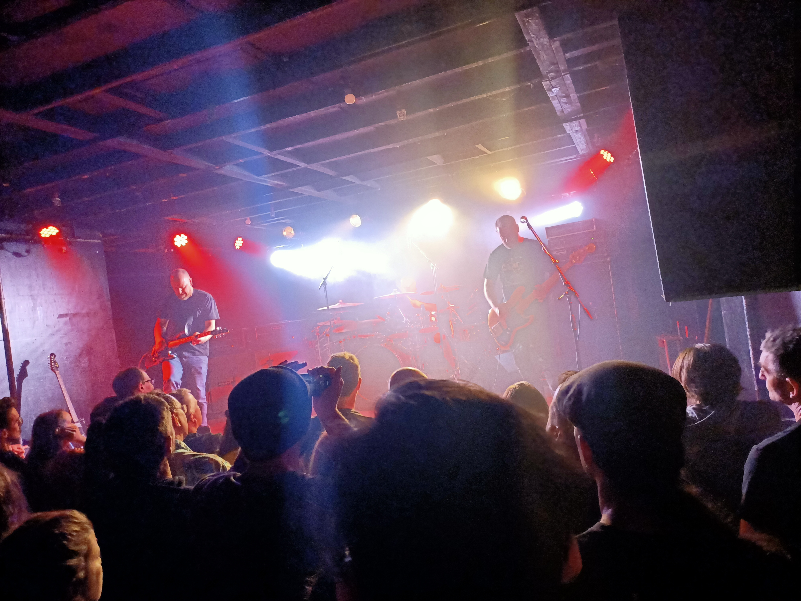

Evening
On Saturday the 12th of November 2022, I saw Jakob perform at San Fran located on Cuba St, Wellington, NZ.

My first listen to Jakob was two days prior to the gig. I listened to their 2014 album Sines, the album struck a chord with me and I was intrigued to see them live. Their music can be described as prog, post-rock.
Band
Jakob are from Hawkes Bay and have been part of the NZ music scene since the late 90’s/early 2000’s. The lineup is:
Jeff Boyle – guitar
Maurice Beckett – bass
Jason Johnston – drums
San Fran
Formerly called San Francisco Bath House, San Fran is situated on Cuba St, in the Wellington CBD. It is a medium sized venue with capacity of around 500 people.
Sound was clear, at no point throughout the show did one instrument drown-out or over power another. Perhaps the lack of vocals makes sound management somewhat simpler?
Beer was around $13 a pint.
Performance
Jakob’s performance was calculated, precise and captivating. Drums and bass are extremely tight, Maurice (bass) and Jason (drums) feed off each-other laying down a rock solid tapestry for Jeff (guitar) to provide a swirling, reverberating style of guitar.
Maurice uses bass delay and phaser pedals extremely well, creating a drone like ambiance. Jason lays down drum beats in strange and interesting time signatures. It’s clear all three members have been playing together for a very long time (25+ years).
Thoughts
I witnessed shamanic art! - Jakob took the audience on a journey and everyone followed.
Their live performance is felt, rather than heard. During the show I found myself caught up within a bottemless introspective moment, absolutely lost at sea amongst the sound-waves. I could feel the whole audience caught in the same trance, Jakob had successfully cultivated a deep connection with the audience. I remember a feeling of spiritual enlightenment after the show, and enjoying how beautiful and blissful the enlightenment felt.
Jason’s tribal drum beats are mystifying, something about his playing makes me feel primal and simple, yet sophisticated and complex at the same time. The melodic drone layered on top of Jason’s beats by Jeff and Maurice creates a swilling soundscape where a wall of music emanates from, encapsulating everything within its wake and weaving all organisms into one single form of consciousness.
It was an amazing concert! - I can’t believe I hadn’t heard of Jakob earlier. I’m also really glad I took earplugs. Music was not unpleasantly loud, but the reverberating sound-waves would have potential to deafen one’s ears.
Final Rating
Band: 4/5 (really good)
Venue: 3/5 (good)
Evening: 5/5 (amazing)
Rating System
1 (bad); 2 (not bad); 3 (good); 4 (really good); 5 (amazing)